2.6 양적 변수 두 개: 선형회귀
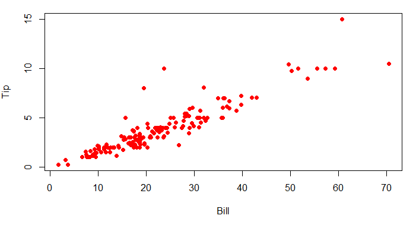
2.5절에서 양적 변수 두 개 사이의 관계를 배웠다. 이 절에서는 두 변수가 선형관계일 때 한 변수로 다른 변수를 예측하는 방법을 배울 것이다.
예제 2.39. 레스토랑에서 계산서(Bill) 금액과 팁(Tip)에 관한 데이터를 RestaurantTips 에서 얻을 수 있다. 계산서 금액(단위: 달러)으로 팁(단위: 달러)이 얼마인지 예측할 때 설명변수는 계산서 금액이고 반응변수는 팁 액수이다. 산점도 그래프는 위에 있다.
(1) 산점도에 나타난 계산서 금액과 팁 액수 사이의 관계를 기술하라.
(2) 두 변수 사이의 상관관계를 계산하라.
(3) 데이터에 가장 적합한 직선을 산점도에 그려보라.
풀이 (클릭하면 풀이가 보입니다)
(1) 산점도를 보면 약간의 이상점(몇 명은 팁을 많이 준다!)이 있지만 두 변수 사이에 강한 선형 관계가 존재함을 알 수 있다.
(2) 상관관계 \(r = 0.915\) 이다. 강한 선형 관계가 있음을 확신시켜준다.
(3) 구글의 스프레드시트로 가장 적합한 직선을 그린다.
- importdata() 함수를 사용하여 데이터를 시트로 읽어들인다.
- 열 A와 B를 선택하고 삽입 메뉴에서 차트를 선택한다.
- 차트 편집기 -> 설정 -> 차트 유형에서 ’분산형 차트’를 선택한다.
- 맞춤 설정 -> 계열 -> 추세선 체크박스를 클릭하면 데이터에 가장 적합한 직선을 그릴 것이다.
- 선 색상과 두께를 조절한다.
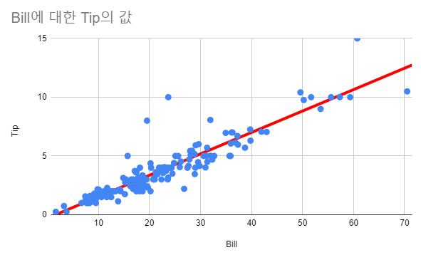
회귀선
데이터를 가장 잘 적합하는 직선을 회귀선(regression line)이라고 한다. 레스토랑 팁 데이터에 회귀선 그래프가 위에 있다. 회귀선은 두 변수 사이의 선형 관계에 대한 모형을 제공한다. 회귀선으로 설명변수의 값이 주어지면 반응변수의 값을 예측할 수 있다.
예제 2.40. 회귀선을 사용하여 계산서 금액이 \(\$60\)일 때 팁 금액을 추정하라.
풀이 (클릭하면 풀이가 보입니다)
산점도에 그려진 회귀선에서 계산서 금액이 \(\$60\)일 때 팁은 대략 \(\$10\)일 것으로 예측된다.
그래프를 사용하여 예측값을 추정하기 보다는 회귀선의 수식을 이용할 것이다. 직선의 식은 \(y = a + bx\)이다. 상수 \(a\)는 절편(intercept)이고 계수 \(b\)는 기울기(slope)이다. 회귀선을 찾는 작업은 데이터의 선형 관계를 가장 잘 기술하는 직선의 기울기와 절편을 찾는 것과 같다.
반응변수 \(y\)의 예측값은 \(\hat{y}\)으로 표기하면 회귀선은
\[\hat{y} = a + bx\]
이다.
레스토랑 팁 데이터의 회귀선 기울기와 절편 계산
- 셀
I2에=slope(B2:B158, A2:A158)입력하여 기울기를 계산하면 \(0.182\)이다. - 셀
I3에=intercept(B2:B158, A2:A158)입력하여 절편을 계산하면 \(-0.292\)이다. - 기울기와 절편을 구하는 함수에서 설명변수와 반응변수의 위치에 주의하라.
확인문제 1. 회귀선의 의미에 대한 설명으로 옳은 것은?
1 회귀선은 항상 두 변수 사이의 완벽한 관계를 설명할 수 있다.
2 회귀선은 반응변수의 변화를 설명변수의 변화로만 예측하는 것이 가능하다.
3 회귀선은 설명변수의 값이 주어졌을 때 반응변수의 값을 예측하는 데 사용된다.
4 회귀선의 기울기는 설명변수와 반응변수가 반드시 비례 관계를 갖는다는 것을 의미한다.
확인문제 2. 회귀선의 기울기(slope) 가 의미하는 바는?
1 설명변수가 1 증가할 때, 반응변수가 기울기 값만큼 증가 또는 감소한다.
2 회귀선의 기울기는 항상 양수이어야 한다.
3 기울기가 0이면 두 변수 사이에는 강한 상관관계가 있다.
4 기울기가 음수일 경우, 두 변수 사이에는 인과관계가 없다.
확인문제 3. 회귀선의 절편(intercept) 의 의미로 옳은 것은?
1 절편은 설명변수의 값이 0일 때, 반응변수의 예측값을 의미한다.
2 절편이 클수록 반응변수와 설명변수 사이의 관계는 강해진다.
3 절편이 0이면 반응변수는 설명변수에 영향을 받지 않는다.
4 절편은 항상 양수여야 한다.
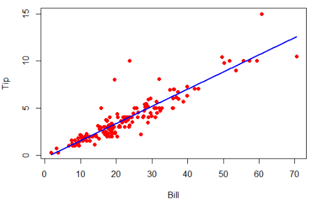
레스토랑 팁 데이터에서 회귀선의 식은
\[\widehat{\text{Tip}} = -0.292 + 0.182 \cdot \text{Bill}\]
이다. 회귀선의 식에 설명변수의 값을 대입하면 예측된 반응변수의 값을 구할 수 있다.
예제 2.41. 계산서 금액이 각각 다음과 같을 때 회귀선 \(\widehat{\text{Tip}} = -0.292 + 0.182 \cdot \text{Bill}\) 을 사용하여 팁 금액을 예측하라.
(1) 계산서 금액 \(\$59.33\)
(2) 계산서 금액 \(\$9.52\)
(3) 계산서 금액 \(\$23.70\)
풀이 (클릭하면 풀이가 보입니다)
(1) \(-0.292 + 0.182(59.33) = 10.506\)
(2) \(-0.292 + 0.182(9.52) = 1.441\)
(3) \(-0.292 + 0.182(23.70) = 4.021\)
예측값은 설명변수의 특정 값에 대한 반응변수의 평균 값을 추정한 값이다. 실제 반응변수의 값은 이 추정한 값보다 크거나 작다.
잔차
위 예제에서 계산서 금액 \(3\)개에 대한 팁의 예측값을 구했다. 이 예측값은 실제 팁과 얼마나 차이가 있을까? 관측값과 예측값의 차이를 잔차(residual)라고 한다.
\[\text{잔차} = \text{관측값} - \text{예측값} = y - \hat{y}\]
아래 산점도는 계산서 금액이 \(\$60.72\) 일 때 잔차를 보여주고 있다.
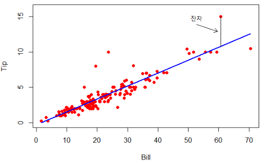
예제 2.42. 앞 예제에서 세 개의 다른 계산서에서 팁 금액을 예측했다. 고객이 실제로 계산한 팁이 주어졌을 때 잔차를 계산하라.
(1) 계산서 금액이 \(\$59.33\) 일 때 실제 팁은 \(\$10.00\)
(2) 계산서 금액이 \(\$9.52\) 일 때 실제 팁은 \(\$1.00\)
(3) 계산서 금액이 \(\$23.70\) 일 때 실제 팁은 \(\$10.00\)
풀이 (클릭하면 풀이가 보입니다)
잔차는 관측값에서 예측값을 뺀 값이다.
(1) \(10.00 - 10.51 = -0.51\)
(2) \(1.00 - 1.44 = -0.44\)
(3) \(10.00 - 4.02 = 5.98\)
확인문제 1. 잔차(residual)의 의미에 대한 설명으로 옳은 것은?
1 잔차는 예측값에서 관측값을 뺀 값이다.
2 잔차는 항상 양수이어야 한다.
3 잔차가 클수록 회귀선이 데이터를 잘 설명하는 것이다.
4 잔차가 \(0\)이면 모든 데이터가 회귀선 위에 놓여 있다.
확인문제 2. 다음 중 잔차의 계산 방법으로 올바른 것은?
1 잔차 = 예측값 - 관측값
2 잔차 = 관측값 - 예측값
3 잔차 = 설명변수 - 반응변수
4 잔차 = 표준편차 × 기울기
확인문제 3. 잔차를 분석하는 가장 중요한 이유는?
1 회귀선이 데이터를 얼마나 잘 설명하는지 평가하기 위해서
2 회귀선의 기울기를 계산하기 위해서
3 설명변수와 반응변수의 단위를 맞추기 위해서
4 이상점을 제거하기 위해서
예제 2.43. 미국 현직 대통령이 재선에 출마할 때 지지율(Approval)과 득표율(Margin) 차이에 관한 데이터는 ElectionMargin에서 얻을 수 있다. 지지율이 설명변수이고, 득표율 차이는 반응변수이다.
(1) 회귀선의 절편과 기울기를 구하고 예측값과 잔차를 계산하라.
(2) 산점도에 회귀선과 잔차를 표시하라.
(3) 가장 큰 잔차는 무엇인가? 이 경우에 관측값은 예측값보다 큰 값인가 아니면 작은 값인가? 이 잔차는 언제 어느 대통령에게서 발생했는가?
풀이 (클릭하면 풀이가 보입니다)
(1) 구글 스프레드시트에서 계산해보자. 계산 결과는 바로 아래 그림을 참고하라.
- 셀
D14에=intercept(D2:D12, C2:C12)을 입력하여 절편을 계산한다. - 셀
D15에=slope(D2:D12, C2:C12)을 입력하여 기울기를 계산한다. - 셀
G2에=$D$14+$D$15*C2을 입력하여 예측값을 계산한다. - 셀
G2의 오른쪽 하단 사각형을 셀G12까지 드래그하여 모든 예측값을 계산한다. - 셀
H2에=D2 - G2를 입력하여 잔차를 계산한다. - 셀
H2의 오른쪽 하단 사각형을 셀H12까지 드래그하여 모든 잔차를 계산한다. - 셀
H14에=sum(H2:H12)을 입력하여 잔차의 합을 계산한다.
(2) 아래 산점도에 그려진 회귀선과 잔차를 보면 잔차는 예측값보다 큰 경우도 있고 작은 경우도 있다. 잔차의 총합을 계산하면 항상 \(0\)이 된다.
(3) 가장 큰 잔차는 \(12.06\)이다. 실제 득표율 차이는 \(23.2\)이고 예측값은 \(11.14\)이다. 이 잔차는 \(1972\)년 닉슨 대통령에서 발생한 것이다.
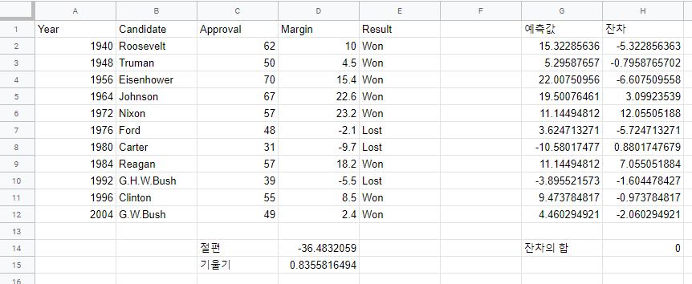
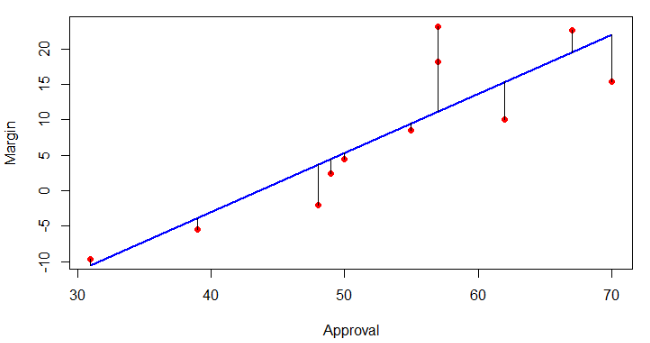
데이터를 최적으로 적합하는 회귀선
회귀선이 데이터를 최적으로 적합하는 기준을 어떻게 결정할까? 그리고 “최적의 적합(best fit)”은 어떤 의미인가? 우리의 목적은 반응변수의 관측값을 가장 훌륭하게 예측하는 회귀선을 발견하는 것이다. 데이터를 최적으로 적합하는 회귀선의 잔차들은 \(0\)과 가까워야 한다. 모든 잔차를 \(0\)이 되게 할 수 있을까? 위 산점도를 보면 직선으로 모든 잔차가 \(0\)이 되게 할 수는 없다.
모든 잔차의 합을 작게 만드는 것은 어떨까? 불행히도 회귀선이 직선일 때 모든 잔차의 합은 항상 \(0\)이 되므로 불가능하다. 잔차의 절댓값의 합을 작게 만드는 것은 어떨까? 좋은 기준이지만 산술적인 방법으로 회귀선을 구할 수가 없다는 단점이 있다. 가장 많이 사용하는 방법은 잔차의 제곱합 \(\sum(y - \hat{y})^2\) 을 최소로 만드는 것이다. 이렇게 만든 회귀선을 최소제곱 회귀선(least square regression line) 또는 간단히 회귀선이라고 부른다.
예제 2.44. 레스토랑 팁 데이터에서 회귀선은
\(\widehat{\text{Tip}} = -0.292 + 0.182 \cdot \text{Bill}\) 이다. 기울기 \(0.182\)와 절편 \(-0.292\)의 의미는 무엇인가?
풀이 (클릭하면 풀이가 보입니다)
기울기 \(0.182\)는 계산서 금액이 \(\$1\) 증가하면 팁은 \(\$0.182\) 증가하는 경향이 있다는 것을 의미한다. 이 표본에 속한 사람들은 팁을 약 \(18.2\%\) 준다고 말할 수도 있다. 절편 \(-0.292\)는 계산서 금액이 \(0\)일 때 팁이 \(-\$0.292\) 된다는 것을 의미한다. 계산서 금액이 \(0\)이거나 팁이 음수일 수 없으므로 현실적인 의미는 없다.
확인문제 1. 최소제곱 회귀선(least squares regression line)의 의미에 대한 설명으로 옳은 것은?
1 최소제곱 회귀선은 모든 잔차를 0으로 만드는 직선이다.
2 최소제곱 회귀선은 잔차들의 합을 최소화하는 직선이다.
3 최소제곱 회귀선은 잔차의 제곱합을 최소화하는 직선이다.
4 최소제곱 회귀선은 반응변수의 평균과 항상 일치한다.
확인문제 2. 기울기의 의미에 대한 설명으로 옳은 것은?
1 기울기는 설명변수가 1 증가할 때 반응변수가 평균적으로 얼마나 변하는지를 나타낸다.
2 기울기는 회귀선 위의 모든 점이 반드시 관측값과 일치하도록 한다.
3 기울기는 항상 양수이다.
4 기울기가 크면 반드시 상관관계가 강하다.
확인문제 3. 회귀선의 절편(intercept) 에 대한 설명으로 틀린 것은?
1 절편은 설명변수가 0일 때 예측된 반응변수 값이다.
2 절편은 회귀선이 y축과 만나는 지점이다.
3 절편이 음수인 경우는 현실적으로 의미가 없을 수도 있다.
4 절편이 클수록 설명변수와 반응변수의 관계가 강하다.
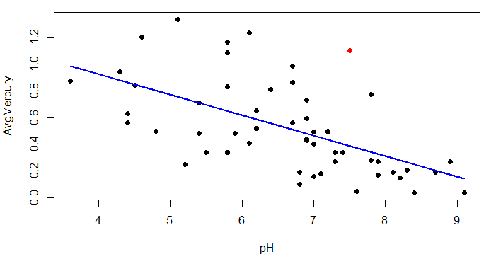
예제 2.45. 미국 플로리다의 호수 53개의 수질 데이터는 FloridaLakes에서 얻을 수 있다. 호수 물에서 쉽게 얻을 수 있는 산도(pH) 값으로 측정이 어려운 물고기의 수은 농도(AvgMercury)를 예측하고 싶다. 예제 2.34에서 이들 두 변수는 음의 선형관계를 가지고 있으므로 회귀선을 이용하는 것이 적절하다.
(1) 회귀선을 컴퓨터로 계산하고 산점도에 회귀선을 그려보라.
(2) 회귀선의 기울기를 플로리다 호수의 상황에 알맞게 해석하라.
(3) Puzzle 호수의 산도는 7.5, 평균 수은 농도는 1.10 ppm이다. 이 호수의 예측된 수은 농도 값과 잔차를 계산하라.
풀이 (클릭하면 풀이가 보입니다)
(1) 구글의 스프레드시트 앱에서 데이터를 읽고 설명변수는 pH, 반응변수는 AvgMercury 로 회귀선을 구한다. 기울기는 -0.1523, 절편은 1.53 이다. 산점도에 회귀선을 그린 그림은 위에 있다.
(2) 회귀선의 기울기는 설명변수의 값이 한 단위 증가할 때 기대되는 반응변수 변화량이다. 여기서는 기울기는 -0.1523이므로 호수 물의 산도가 1 증가하면 물고기의 수은 농도는 0.1523 ppm 감소할 것이라고 기대된다.
(3) 산점도에서 빨간색 점은 Puzzle 호수의 데이터이다. 이 호수의 예측된 수은 농도는 \(1.53 - 0.1523 \times 7.5 = 0.388\) ppm 이다. 관측된 수은 농도는 \(1.10\) ppm으로 예측한 것보다 훨씬 높다. 잔차는 \(1.10 - 0.388 = 0.712\) 이다. \(53\)개 호수 중에서 가장 큰 값이다.
기울기에 대한 기호
표본에서 회귀선의 기울기는 b로 표기하였다. 모집단인 경우에 기울기 기호는 무엇일까? 미국의 현직 대통령의 재선 출마에 관한 데이터는 1940년부터 모든 미국의 대통령을 포함하므로 표본이 아닌 모집단이다. 지금까지 모집단에는 표본과 다른 기호를 사용하였다. 모집단의 회귀선 기울기는 그리스 문자 \(\beta\) (베타)를 사용한다.
확인문제 1. 회귀선의 기울기에 대한 설명으로 옳은 것은?
1 기울기는 항상 양수이다.
2 기울기는 설명변수가 1 증가할 때 반응변수가 변하는 예상 평균값을 나타낸다.
3 기울기는 설명변수와 반응변수 사이의 관계 강도를 측정하는 값이다.
4 기울기의 값이 크면 반드시 설명변수가 반응변수에 미치는 영향이 크다는 것을 의미한다.
확인문제 2. 회귀선의 잔차(residual) 에 대한 설명으로 틀린 것은?
1 잔차는 관측값에서 예측값을 뺀 값이다.
2 잔차의 합은 항상 0이 된다.
3 잔차가 크면 회귀선이 데이터를 잘 설명하는 것이다.
4 잔차가 0이면 관측값이 예측값과 정확히 일치한다.
확인문제 3. 모집단에서 회귀선의 기울기를 나타내는 기호는 무엇인가?
1 \(r\)
2 \(b\)
3 \(\beta\)
4 \(\rho\)
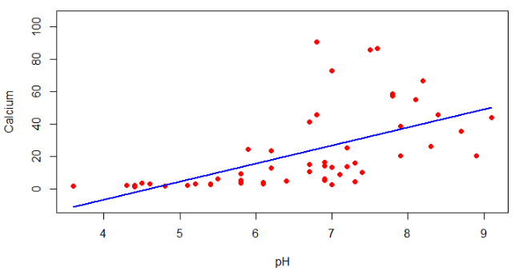
회귀선 사용에서 주의할 사항
예제 2.44에서 계산서 금액이 \(\$0\) 일 때 팁을 예측하는 것은 무의미한 일이라고 하였다. 계산서 금액의 범위는 \(\$1.66\)에서 \(\$70.51\) 인데 이 범위를 벗어나는 \(\$1000\)에 대한 팁을 예측하는 것도 무의미하다. 일반적으로 설명변수 값의 범위를 벗어나는 영역에서 반응변수의 값을 예측하는 것은 적절하지 않다.
예제 2.46. 예제 2.45에서 산도(pH)를 사용하여 물고기의 수은 농도(AvgMercury)를 예측하였다. 수은 대신에 호수의 칼슘 농도(Calcium, mg/l)를 예측한다고 하자. 산점도와 회귀선 \(\widehat{\text{Calcium}} = -51.4 + 11.17 \cdot \text{pH}\) 그래프는 위에 있다. 회귀선의 기울기를 어떻게 해석하겠는가? 절편은 의미가 있는가? 직선 회귀식이 두 변수 사이의 관계를 잘 표현한다고 생각하는가?
풀이 (클릭하면 풀이가 보입니다)
기울기 11.17은 pH가 1만큼 증가할 때 칼슘 농도가 대략 11.17 mg/l 만큼 증가한다는 것을 의미한다. 절편은 실제 의미가 없는데 그 이유는 pH가 음수인 호수는 없기 때문이다. pH와 칼슘 농도 사이에 양의 연관이 있는 것은 명확하지만 선형관계는 아니다. 산점도의 패턴도 pH가 증가하면서 칼슘 농도는 좀 더 급격히 증가하는 곡선 형태이다. 최소제곱 회귀 직선은 pH 수준이 4.5 이하일 때 칼슘 농도 값을 음수로 예측하는데 이는 불가능하다. 곡선 형태의 회귀선을 적합해야 하는데 직선 모형을 사용했기 때문에 불합리한 값을 예측했다.
pH와 평균 수은 농도 사이에 상관관계는 -0.575이고, pH와 칼슘 농도의 상관관계는 0.577이다. 두 개의 상관관계 크기는 비슷하지만 전자는 선형회귀가 적절하고, 후자는 적절하지 않다. 따라서 산점도를 그려서 패턴이 선형인지 아닌지를 모형을 만들기 전에 반드시 확인해야 한다.
마지막으로 산점도에서 회귀선에 크게 영향을 끼치는 이상점이 있는 지를 찾아보아야 한다. 아래 왼쪽의 그래프는 이상점이 있고, 오른쪽 그래프는 이상점을 제외하고 그린 것이다.
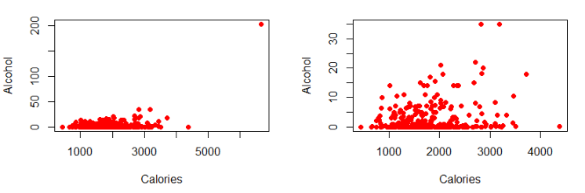
확인문제 1. 회귀선을 사용할 때 주의해야 할 사항으로 적절하지 않은 것은?
1 설명변수 값의 범위를 벗어난 값에 대해 예측하는 것은 적절하지 않다.
2 회귀선의 절편 값은 항상 의미를 가진다.
3 회귀선을 사용하기 전에 산점도를 그려서 선형 패턴이 맞는지 확인해야 한다.
4 이상점이 회귀선에 미치는 영향을 고려해야 한다.
확인문제 2. 다음 중 선형 회귀가 적절하지 않은 경우는?
1 두 변수 사이의 관계가 곡선 형태일 때.
2 두 변수 사이의 관계가 강한 선형 관계를 보일 때.
3 설명변수와 반응변수 간에 양의 상관관계가 있을 때.
4 이상점이 존재하지만 그 영향이 미미할 때.
확인문제 3. 회귀선을 사용할 때 가장 먼저 해야 할 작업으로 가장 적절한 것은?
1 회귀선의 절편과 기울기를 구한다.
2 산점도를 그려서 두 변수 사이의 관계가 선형인지 확인한다.
3 설명변수 값을 최대한 크게 설정하여 예측력을 높인다.
4 이상점을 제거하지 않고 모든 데이터를 사용하여 회귀선을 적합한다.
학습 내용 정리
다음 사항을 이해하거나 해결하는 능력이 있어야 한다.
- 컴퓨터로 두 개의 양적 변수 데이터에 대한 회귀선을 계산할 수 있다.
- 회귀선을 이용하여 반응변수의 값을 예측할 수 있다.
- 회귀선의 기울기, 절편을 맥락에 적절하게 해석할 수 있다.
- 잔차를 계산하고 산점도에 표현할 수 있다.
- 설명변수 값의 범위를 벗어나서 예측하는 것은 위험하다.
- 산점도를 그려서 데이터의 패턴을 확인한다.
설명변수와 반응변수
\(x\)로 \(y\)를 예측하는 회귀선과 \(y\)로 \(x\)를 예측하는 회귀선은 같지 않다. 따라서 설명변수와 반응변수를 명확하게 구분해야 한다. 회귀선은 항상 다음과 같은 형태이다.
\[\widehat{\text{Response}} = a + b \cdot \text{Explanatory}\]
잔차
반응변수의 관측값에서 예측값을 뺀 것을 잔차(residual)라고 한다.
\[\text{Residual} = \text{Observed} - \text{Predicted} = y - \hat{y}\]
관측값이 회귀선 위에 있으면 잔차는 양수, 아래에 있으면 음수이다. 예측값이 관측값과 가까울 때 잔차는 작다.
최소제곱 회귀선
잔차의 제곱합을 최소로 하는 회귀선을 최소 제곱 회귀선(least square regression line)이라고 한다.
회귀선의 기울기와 절편
회귀선 \(\hat{y} = a + bx\) 에 대하여
- 기울기 \(b\)는 설명변수 \(x\) 값이 한 단위 변할 때 예측되는 반응변수 값의 변화량이다.
- 절편 \(a\)는 설명변수 \(x\) 값이 \(0\)일 때 예측되는 반응변수의 값이다. 종종 설명변수 값이 \(0\)인 상황이 비합리적일 때는 절편 해석이 무의미하다.
회귀선을 사용할 때 주의할 점
- 설명변수 값의 범위를 벗어나서 반응변수의 값을 예측할 때 조심해야 한다.
- 쌍으로 주어진 양적 변수 두 개가 있으면 회귀선을 항상 계산할 수 있다. 하지만 사전에 산점도를 그려서 선형관계가 있는지 반드시 눈으로 확인해야 한다.
- 상관관계처럼 회귀선에 영향을 크게 주는 이상점이 있는지 확인해야 한다.
확인문제 1. 회귀선의 기울기와 절편에 대한 설명으로 옳지 않은 것은?
1 회귀선의 기울기는 설명변수가 한 단위 증가할 때 반응변수의 예상 변화량을 의미한다.
2 회귀선의 절편은 설명변수 값이 \(0\)일 때 반응변수의 예상 값을 의미한다.
3 절편은 항상 의미를 가지므로 반드시 해석해야 한다.
4 기울기가 양수이면 설명변수 값이 증가할 때 반응변수 값도 증가하는 경향이 있다.
확인문제 2. 잔차(Residual)에 대한 설명으로 옳지 않은 것은?
1 잔차는 관측값에서 예측값을 뺀 값이다.
2 잔차가 양수이면 관측값이 회귀선보다 위에 위치한다.
3 회귀선이 모든 데이터를 완벽히 설명하면 잔차의 합은 항상 \(0\)이 된다.
4 잔차가 작을수록 회귀선이 데이터를 더 잘 적합하고 있음을 의미한다.
확인문제 3. 회귀선을 사용할 때 주의해야 할 사항으로 가장 적절한 것은?
1 설명변수 값의 범위를 벗어나도 회귀선을 사용하여 예측할 수 있다.
2 산점도를 그리지 않고 회귀선을 계산해도 된다.
3 이상점이 있더라도 항상 회귀선을 그대로 사용해야 한다.
4 회귀선을 사용하기 전에 산점도를 그려 선형 관계인지 확인해야 한다.
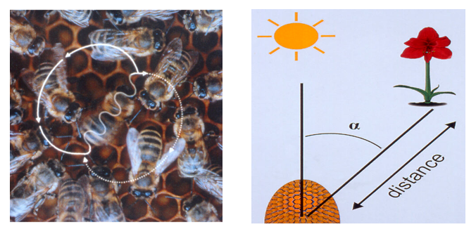
과제 2.17. 꿀벌 정찰대는 먹이나 근사한 새 둥지를 발견하면 8자 춤을 추어 나머지 꿀벌에게 알린다. 춤춘 시간과 알려주는 거리에 대한 데이터로 산점도와 회귀선을 분석한다.
(1)-a 설명변수는?
1 춤춘 시간
2 거리
(1)-b 반응변수는?
1 춤춘 시간
2 거리
(2) 산점도를 그렸을 때 나타나는 데이터의 패턴은?
1 양의 선형관계
2 양의 곡선관계
3 음의 선형관계
4 음의 곡선관계
(3) 두 변수의 상관관계는?
1 \(0.984\)
2 \(0.985\)
3 \(0.987\)
4 \(0.991\)
5 \(0.994\)
회귀선의 기울기와 절편을 구하시오 (반올림하여 소수점 이하 1자리).
(4)-a 기울기
정답: 1174.3
(4)-b 절편
정답: -399.1
(6) 회귀선을 사용하여 꿀벌이 1초 동안 춤을 추었을 때 예측되는 거리는?
1 \(735.2\)
2 \(745.2\)
3 \(755.2\)
4 \(765.2\)
5 \(775.2\)
※ 회귀선의 기울기는 정찰대가 춤추는 시간이 1초 더 길어지면 거리가 1174.3 미터만큼 더 멀어진다는 것을 의미한다.
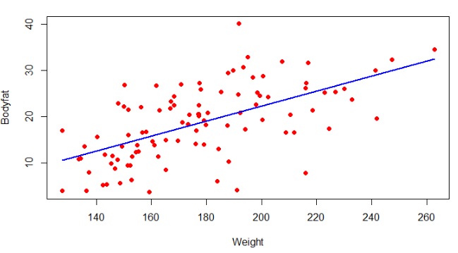
과제 2.18. 100명의 남자에 대한 체지방 비율(Bodyfat), 몸무게(Weight), 복부 둘레(Abdomen) 등에 관한 데이터를 BodyFat에서 얻을 수 있다. 아래 산점도와 회귀선을 보고 답하시오.
(1) 실제 몸무게는?
1 \(190.25\)
2 \(190.75\)
3 \(191.25\)
4 \(191.75\)
5 \(192.25\)
(2) 실제 체지방 비율은?
1 \(40.1\)
2 \(40.2\)
3 \(40.3\)
4 \(40.4\)
5 \(40.5\)
(3) 체지방 예측값은?
1 \(20.5\)
2 \(20.6\)
3 \(20.7\)
4 \(20.8\)
5 \(20.9\)
(4) 잔차는?
1 \(19.2\)
2 \(19.4\)
3 \(19.6\)
4 \(19.8\)
5 \(20.0\)
과제 2.19. 데이터는 위 문제에서 사용한 데이터와 같다. 복부 둘레(Abdomen)로 체지방 비율을 예측하려고 한다. 두 변수의 산점도와 회귀선 그래프는 바로 아래에 있다.
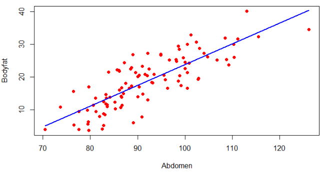
(1) 체지방과 상관관계가 큰 변수는 다음 중 어느 것인가?
1 몸무게
2 복부 둘레
(2) 산점도에서 복부 둘레가 가장 긴 사람의 실제 체지방은?
1 \(34.3\)
2 \(34.4\)
3 \(34.5\)
4 \(34.6\)
5 \(34.7\)
(3) 산점도에서 복부 둘레가 가장 긴 사람의 체지방을 예측하면?
1 \(40.1\)
2 \(40.2\)
3 \(40.3\)
4 \(40.4\)
5 \(40.5\)
(4) 산점도에서 복부 둘레가 가장 긴 사람의 잔차는?
1 \(-5.5\)
2 \(-5.6\)
3 \(-5.7\)
4 \(-5.8\)
5 \(-5.9\)